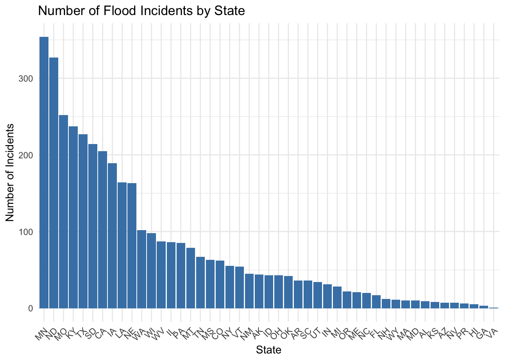
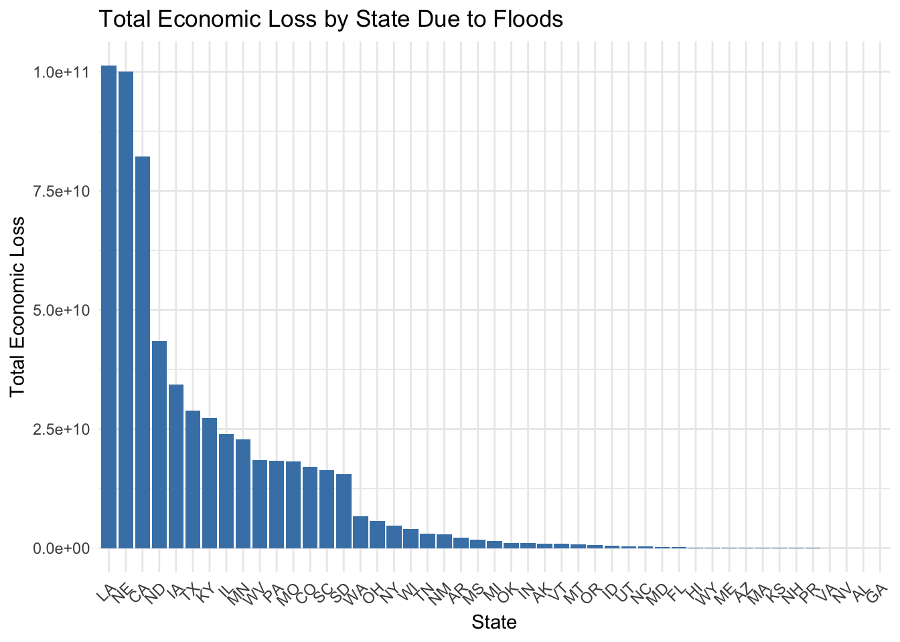
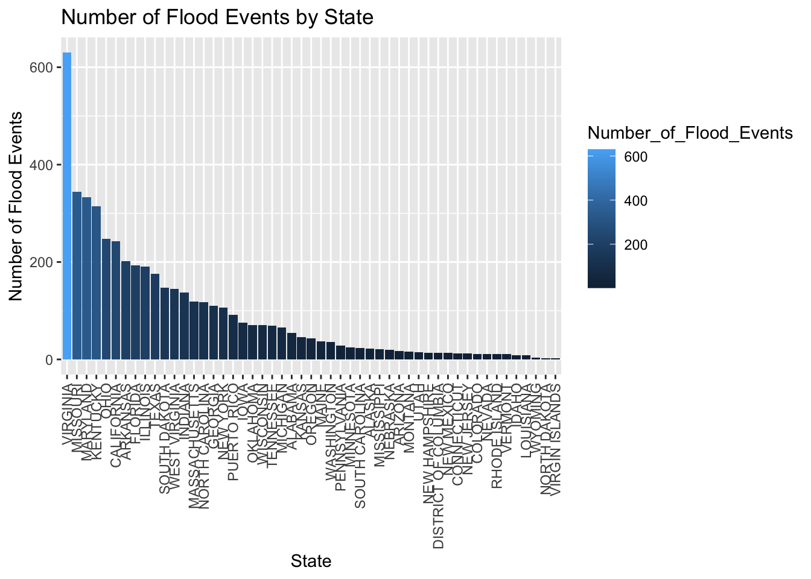
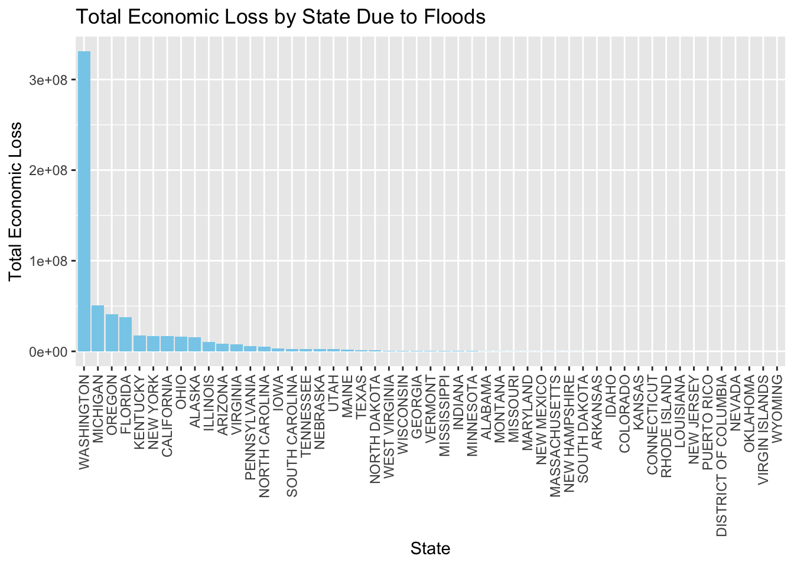
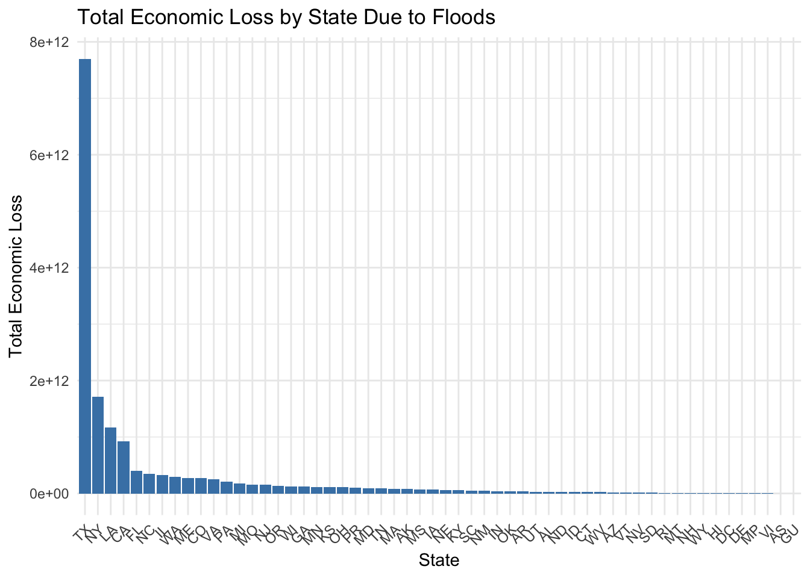

Floods are one of the most destructive natural disasters. In the United States, natural disaster recovery is managed by the Federal Emergency Management Agency (FEMA). My task will be to analyze the data and find out the harm of flood to the city. I need to do Data Cleaning on 4 data sets. The sources of these 4 data sets are NOAA data for 2020 and 2021 and FEMA data for all years respectively. I will be extracting flood Data for 2020 and 2021, which will be the main work of Data Cleaning.
library(dplyr)
Attaching package: 'dplyr'
The following objects are masked from 'package:stats':
filter, lag
The following objects are masked from 'package:base':
intersect, setdiff, setequal, union
Warning in FUN(X[[i]], ...): NAs introduced by coercion
Warning in FUN(X[[i]], ...): NAs introduced by coercion
Warning in FUN(X[[i]], ...): NAs introduced by coercion
Warning in FUN(X[[i]], ...): NAs introduced by coercion
Warning in FUN(X[[i]], ...): NAs introduced by coercion
Warning in FUN(X[[i]], ...): NAs introduced by coercion
Warning in FUN(X[[i]], ...): NAs introduced by coercion
Warning in FUN(X[[i]], ...): NAs introduced by coercion
Warning in FUN(X[[i]], ...): NAs introduced by coercion
When I’ve sorted out the data, I’m going to show you what the meaning is behind the flood-related data. I need to analyze the harm caused by floods to cities, so I will analyze the number of floods in each state in the United States and the economic losses caused by floods.
I’m going to show you how each state has been affected by the floods in descending order. There are two different sets of data, NOAA data and FEMA data. My Data Visualization will show the mission from two different perspectives.
Here is a full year of data from FEMA data:
library(ggplot2)# # Count the number of flood incidents for each statestate_counts <- merged_data %>%group_by(state) %>%summarise(count =n()) %>%arrange(desc(count))# Plotggplot(state_counts, aes(x =reorder(state, -count), y = count)) +geom_bar(stat ="identity", fill ="steelblue") +theme_minimal() +labs(title ="Number of Flood Incidents by State", x ="State", y ="Number of Incidents") +theme(axis.text.x =element_text(angle =45, hjust =1))

# Get the state with the most flood incidentsmost_affected <- state_counts[1,]print(most_affected)
# A tibble: 1 × 2
state count
<chr> <int>
1 MN 354
merged_data$totalEconomicLoss <-rowSums(merged_data[,c('totalAmountIhpApproved', 'totalAmountHaApproved', 'totalAmountOnaApproved', 'totalObligatedAmountPa', 'totalObligatedAmountCatAb', 'totalObligatedAmountCatC2g', 'totalObligatedAmountHmgp')], na.rm =TRUE)state_loss <- merged_data %>%group_by(state) %>%summarise(TotalLoss =sum(totalEconomicLoss, na.rm =TRUE)) %>%arrange(desc(TotalLoss))ggplot(state_loss, aes(x =reorder(state, -TotalLoss), y = TotalLoss)) +geom_bar(stat="identity", fill="steelblue") +theme_minimal() +labs(title="Total Economic Loss by State Due to Floods",x="State", y="Total Economic Loss") +theme(axis.text.x =element_text(angle =45, hjust =1))

Here is NOAA data:
flood_by_state <- combined_data %>%filter(EVENT_TYPE =="Flood") %>%group_by(STATE) %>%summarise(Number_of_Flood_Events =n()) %>%arrange(-Number_of_Flood_Events)ggplot(flood_by_state, aes(x =reorder(STATE, -Number_of_Flood_Events), y = Number_of_Flood_Events, fill = Number_of_Flood_Events)) +geom_bar(stat ="identity") +labs(title ="Number of Flood Events by State", x ="State", y ="Number of Flood Events") +theme(axis.text.x =element_text(angle =90, vjust =0.5, hjust=1))

# Apply the function to the columns related to moneycombined_data$DAMAGE_PROPERTY <-sapply(combined_data$DAMAGE_PROPERTY, replace_k_m)combined_data$DAMAGE_CROPS <-sapply(combined_data$DAMAGE_CROPS, replace_k_m)# Filter out flood events and calculate total economic loss by stateeconomic_loss_by_state <- combined_data %>%filter(EVENT_TYPE =="Flood") %>%group_by(STATE) %>%summarise(Total_Economic_Loss =sum(DAMAGE_PROPERTY, na.rm=TRUE) +sum(DAMAGE_CROPS, na.rm=TRUE)) %>%arrange(-Total_Economic_Loss)# Plottingggplot(economic_loss_by_state, aes(x =reorder(STATE, -Total_Economic_Loss), y = Total_Economic_Loss)) +geom_bar(stat ="identity", fill ="skyblue") +labs(title ="Total Economic Loss by State Due to Floods", x ="State", y ="Total Economic Loss") +theme(axis.text.x =element_text(angle =90, vjust =0.5, hjust=1))

Here is 2020 and 2021 year from FEMA data:
disaster_declarations <-read.csv("DisasterDeclarationsSummaries.csv")fema_web_disasters <-read.csv("FemaWebDisasterSummaries.csv")# Convert the 'declarationDate' column to Date format in Rdisaster_declarations$declarationDate <-as.Date(disaster_declarations$declarationDate)# Filter the data for the years 2020 and 2021filtered_dds <- disaster_declarations %>%filter(format(declarationDate, "%Y") %in%c("2020", "2021"))# Merge the datasets based on the 'disasterNumber' columnmerged_data_r <-merge(filtered_dds, fema_web_disasters, by="disasterNumber")
#library("ggplot2")merged_data_r $totalEconomicLoss <-rowSums(merged_data_r [,c('totalAmountIhpApproved', 'totalAmountHaApproved', 'totalAmountOnaApproved', 'totalObligatedAmountPa', 'totalObligatedAmountCatAb', 'totalObligatedAmountCatC2g', 'totalObligatedAmountHmgp')], na.rm =TRUE)state_loss <- merged_data_r %>%group_by(state) %>%summarise(TotalLoss =sum(totalEconomicLoss, na.rm =TRUE)) %>%arrange(desc(TotalLoss))ggplot(state_loss, aes(x =reorder(state, -TotalLoss), y = TotalLoss)) +geom_bar(stat="identity", fill="steelblue") +theme_minimal() +labs(title="Total Economic Loss by State Due to Floods",x="State", y="Total Economic Loss") +theme(axis.text.x =element_text(angle =45, hjust =1))

EDA(Exploratory Data Analysis)
Through data visualization, I came to some conclusions in the FEMA and NOAA data. Even though the years are the same, the states with the worst losses are not the same. I think this is because the two data for the loss of the standard is not consistent.
I created a map to try to see if the flooding was more damaging inland because it was closer to the sea.
I hope this can be used as a breakthrough to analyze that important economic cities will bring greater economic losses than coastal areas. In this regard, it is judged what economy they use as a criterion.
library(sf)
Linking to GEOS 3.10.2, GDAL 3.4.2, PROJ 8.2.1; sf_use_s2() is TRUE
library(tigris)
To enable caching of data, set `options(tigris_use_cache = TRUE)`
in your R script or .Rprofile.
Warning in FUN(X[[i]], ...): NAs introduced by coercion
Warning in FUN(X[[i]], ...): NAs introduced by coercion
Warning in FUN(X[[i]], ...): NAs introduced by coercion
Warning in FUN(X[[i]], ...): NAs introduced by coercion
Warning in FUN(X[[i]], ...): NAs introduced by coercion
Warning in FUN(X[[i]], ...): NAs introduced by coercion
Warning in FUN(X[[i]], ...): NAs introduced by coercion
Warning in FUN(X[[i]], ...): NAs introduced by coercion
Warning in FUN(X[[i]], ...): NAs introduced by coercion
combined_data$DAMAGE_CROPS <-sapply(combined_data$DAMAGE_CROPS, replace_k_m, USE.NAMES =FALSE)# Sum property and crop damagecombined_data <- combined_data %>%group_by(STATE) %>%summarise(total_damage =sum(DAMAGE_PROPERTY + DAMAGE_CROPS, na.rm =TRUE))combined_data <- combined_data %>%mutate(state =toTitleCase(tolower(STATE)))label_formatter <-function(x) {sapply(x, function(x) {if (is.na(x)) {return(NA) } elseif (x >=1e6) {paste0(formatC(x /1e6, format ="f", digits =1), "M") } elseif (x >=1e3) {paste0(formatC(x /1e3, format ="f", digits =1), "K") } else {as.character(x) } })}# Get the US states shapefilestates_sf <-st_as_sf(tigris::states())
# Ensure the 'NAME' column is a character type for the joinstates_sf$NAME <-as.character(states_sf$NAME)# Join the economic damage data with the states shapefilemap_data <-left_join(states_sf, combined_data, by =c("NAME"="state"))# Create the map showing economic damageggplot(map_data) +geom_sf(aes(fill = total_damage), color ="white", size =0.25) +scale_fill_viridis_c(name ="Total Economic Damage",trans ="log", # Logarithmic scale for better color variationlabels = label_formatter # Use custom formatter for labels ) +theme_minimal() +geom_sf_text(aes(label =label_formatter(total_damage)), color ="white", size =3, check_overlap =TRUE) +labs(title ="Total Economic Damage by State in the United States (Years 2020 & 2021)") +theme(legend.position ="bottom",axis.text.x =element_blank(),axis.text.y =element_blank(),axis.ticks =element_blank(),axis.title.x =element_blank(),axis.title.y =element_blank(),legend.text =element_text(size =10) ) +coord_sf(xlim =c(-125, -66), ylim =c(25, 50), expand =FALSE)
Warning in st_point_on_surface.sfc(sf::st_zm(x)): st_point_on_surface may not
give correct results for longitude/latitude data
# Ensure the 'NAME' column is a character type for the joinstates_sf$NAME <-as.character(states_sf$NAME)# Join the economic damage data with the states shapefilemap_data <-left_join(states_sf, state_loss, by =c("NAME"="state"))# Apply the label_formatter to the TotalLoss columnmap_data$total_damage_label <-label_formatter(map_data$TotalLoss)# Create the map showing economic damageggplot(map_data) +geom_sf(aes(fill = TotalLoss), color ="white", size =0.25) +scale_fill_viridis_c(name ="Total Economic Damage",trans ="log", # Logarithmic scale for better color variationlabels = label_formatter # Use custom formatter for labels ) +theme_minimal() +geom_sf_text(aes(label = total_damage_label), color ="white", size =3, check_overlap =TRUE) +labs(title ="Total Economic Damage by State in the United States (Years 2020 & 2021)") +theme(legend.position ="bottom",axis.text.x =element_blank(),axis.text.y =element_blank(),axis.ticks =element_blank(),axis.title.x =element_blank(),axis.title.y =element_blank(),legend.text =element_text(size =10) ) +coord_sf(xlim =c(-125, -66), ylim =c(25, 50), expand =FALSE)
Warning in st_point_on_surface.sfc(sf::st_zm(x)): st_point_on_surface may not
give correct results for longitude/latitude data
In general, coastal areas are more dangerous than inland areas. Although some economic cities, such as New York, also had high economic losses, the economic losses of coastal cities were much higher than those of inland areas.